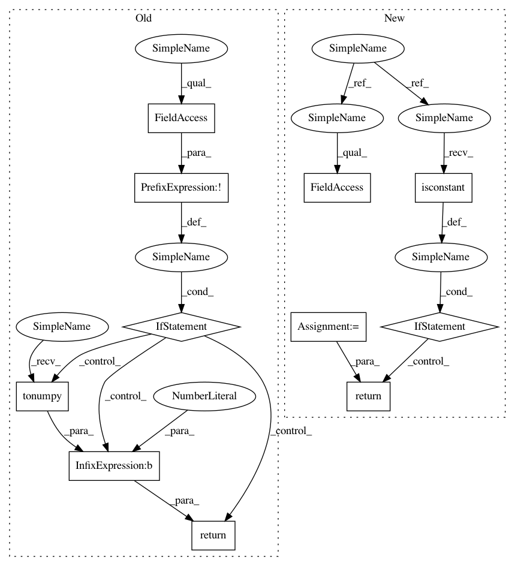

272f235fd8418eae67631d62051084eb363f781b,chaospy/descriptives/skewness.py,,Skew,#Any#Any#,8
Before Change
if dist is None:
dist, poly = poly, numpoly.variable(len(poly))
poly = numpoly.set_dimensions(poly, len(dist))
if not poly.isconstant:
return poly.tonumpy()**3
poly = poly-E(poly, dist, **kws)
poly = numpoly.true_divide(poly, Std(poly, dist, **kws))
return E(poly**3, dist, **kws)
After Change
if dist is None:
dist, poly = poly, numpoly.variable(len(poly))
poly = numpoly.set_dimensions(poly, len(dist))
if poly.isconstant():
return numpy.full(poly.shape, numpy.nan)
poly = poly-E(poly, dist, **kws)
poly = numpoly.true_divide(poly, Std(poly, dist, **kws))
return E(poly**3, dist, **kws)
In pattern: SUPERPATTERN
Frequency: 3
Non-data size: 11
Instances
Project Name: jonathf/chaospy
Commit Name: 272f235fd8418eae67631d62051084eb363f781b
Time: 2020-11-05
Author: jonathf@users.noreply.github.com
File Name: chaospy/descriptives/skewness.py
Class Name:
Method Name: Skew
Project Name: jonathf/chaospy
Commit Name: 272f235fd8418eae67631d62051084eb363f781b
Time: 2020-11-05
Author: jonathf@users.noreply.github.com
File Name: chaospy/descriptives/kurtosis.py
Class Name:
Method Name: Kurt
Project Name: jonathf/chaospy
Commit Name: 272f235fd8418eae67631d62051084eb363f781b
Time: 2020-11-05
Author: jonathf@users.noreply.github.com
File Name: chaospy/descriptives/variance.py
Class Name:
Method Name: Var